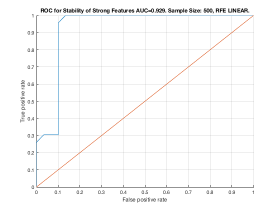

Feature Stability of SVM-RFE on TIE-Net with 500 samples.
unit_stability_type(500, 2, "TieNet")
Figure 19. ROC for Stability of Strong Features AUC=0.929. Sample Size: 500, RFE LINEAR. _________________________________________________________________________________________
Table 19. Feature Stability of RFE LINEAR on TieNet with 500 samples.
______________________________________________________________________
SELECTED COUNTS: Strong=23, Weak=26, Irrelevant=4
TOTAL COUNTS: Strong=23, Weak=26, Irrelevant=4
Feature_Number Stability Type Path_Length N_MBS Equivalence
______________ _________ ____________ ___________ _____ ___________
22 ' 0.656 ' ' STRONG ' 2 0 21
21 ' 0.624 ' ' STRONG ' 1 0 21
23 ' 0.624 ' ' STRONG ' 3 0 21
18 ' 0.260 ' ' STRONG ' 1 0 18
19 ' 0.254 ' ' STRONG ' 2 0 18
20 ' 0.236 ' ' STRONG ' 3 0 18
7 ' 0.044 ' ' STRONG ' 1 0 7
39 ' 0.044 ' ' weak ' 4 0 39
28 ' 0.042 ' ' weak ' 5 0 28
40 ' 0.040 ' ' weak ' 3 0 40
4 ' 0.038 ' ' STRONG ' 4 0 1
9 ' 0.034 ' ' STRONG ' 3 0 7
3 ' 0.028 ' ' STRONG ' 4 0 1
5 ' 0.028 ' ' STRONG ' 3 0 1
8 ' 0.028 ' ' STRONG ' 2 0 7
11 ' 0.028 ' ' STRONG ' 4 0 7
1 ' 0.022 ' ' STRONG ' 1 0 1
2 ' 0.022 ' ' STRONG ' 2 0 1
10 ' 0.022 ' ' STRONG ' 4 0 7
6 ' 0.020 ' ' STRONG ' 3 0 1
17 ' 0.018 ' ' STRONG ' 4 270 12
13 ' 0.016 ' ' STRONG ' 2 540 12
15 ' 0.016 ' ' STRONG ' 3 810 12
12 ' 0.014 ' ' STRONG ' 1 1080 12
16 ' 0.014 ' ' STRONG ' 2 1350 12
14 ' 0.012 ' ' STRONG ' 3 1620 12
38 ' 0.012 ' ' weak ' 5 1620 38
35 ' 0.010 ' ' weak ' 7 1620 35
37 ' 0.010 ' ' weak ' 6 1620 37
41 ' 0.010 ' ' weak ' 3 1620 41
46 ' 0.010 ' ' weak ' 7 1620 46
49 ' 0.010 ' ' weak ' 6 1620 49
24 ' 0.008 ' ' weak ' 4 1620 24
25 ' 0.008 ' ' weak ' 6 1620 25
26 ' 0.008 ' ' weak ' 5 1620 26
27 ' 0.008 ' ' weak ' 6 1620 27
29 ' 0.008 ' ' weak ' 11 1620 29
30 ' 0.008 ' ' weak ' 10 1620 30
31 ' 0.008 ' ' weak ' 9 1620 31
32 ' 0.008 ' ' weak ' 8 1620 32
33 ' 0.008 ' ' weak ' 8 1620 33
34 ' 0.008 ' ' weak ' 8 1620 34
36 ' 0.008 ' ' weak ' 8 1620 36
42 ' 0.008 ' 'irrelevant' Inf 1620 42
43 ' 0.008 ' 'irrelevant' Inf 1620 43
44 ' 0.008 ' 'irrelevant' Inf 1620 44
45 ' 0.008 ' ' weak ' 7 1620 45
47 ' 0.008 ' 'irrelevant' Inf 1620 47
48 ' 0.008 ' ' weak ' 6 1620 48
50 ' 0.008 ' ' weak ' 5 1620 50
51 ' 0.008 ' ' weak ' 4 1620 51
52 ' 0.008 ' ' weak ' 4 1620 52
53 ' 0.008 ' ' weak ' 5 1620 53